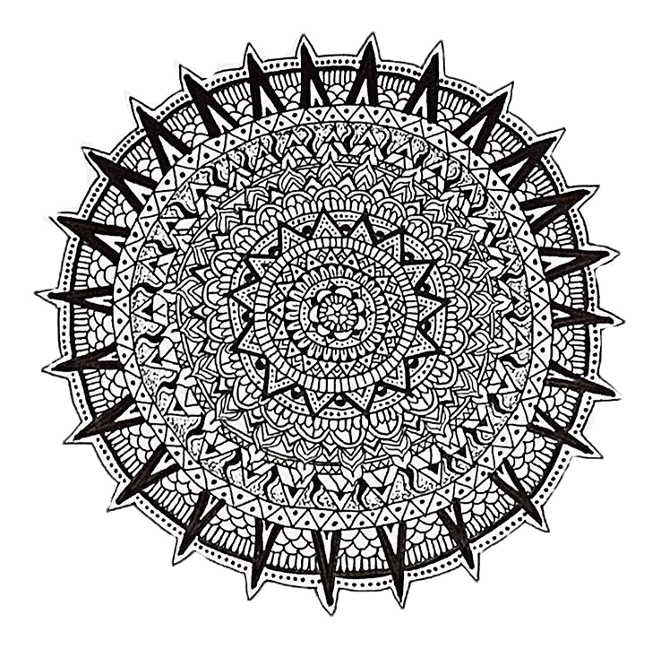
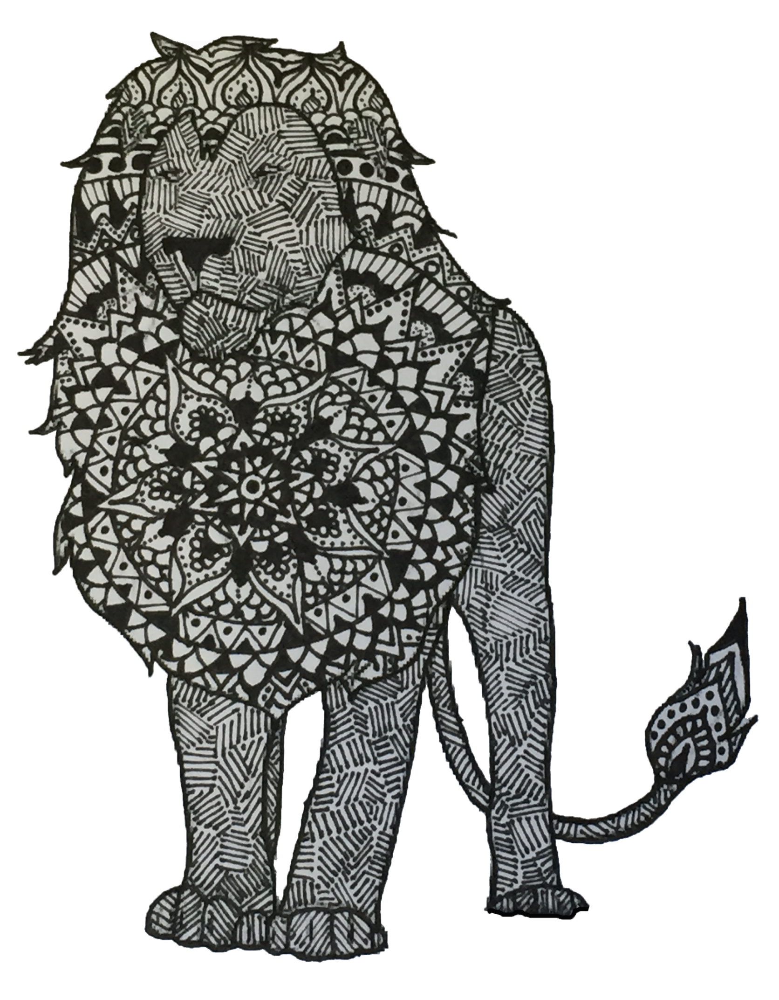
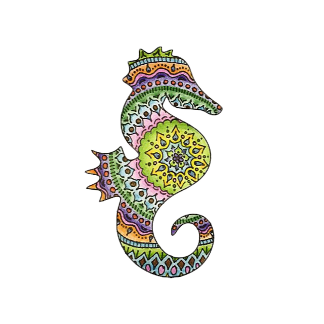
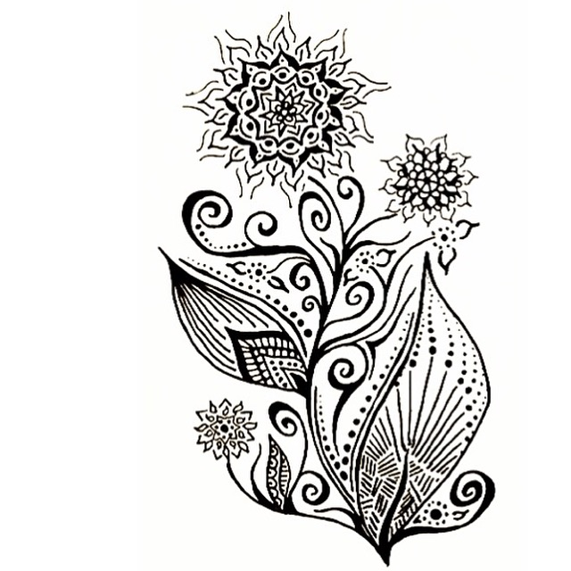
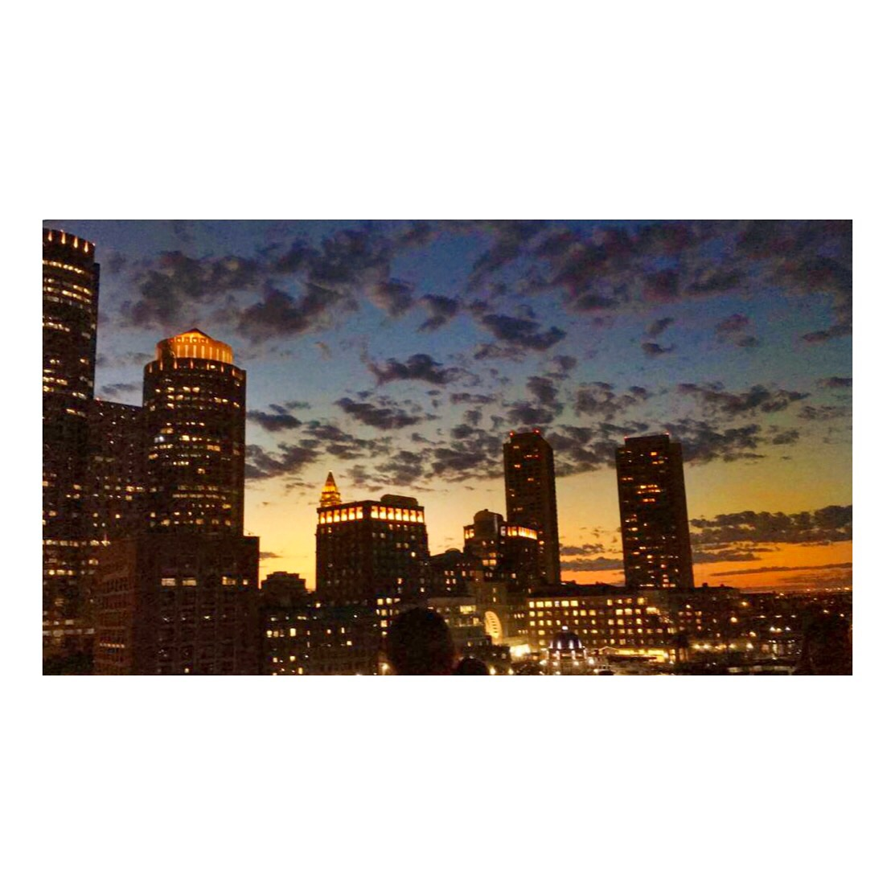

"World Map" by Katie Berlin, 2015, black pen and colored pencil, 570 x 260

"Mandala" by Katie Berlin, 2015, black pen, 300 x 300

"Lion" by Katie Berlin, 2016, black pen, 265 x 320
"World Map" by Katie Berlin, 2015, black pen and colored pencil, 570 x 260

"Sea Horse" by Katie Berlin, 2015, black pen and colored pencil, 220 x 250

"Flower" by Katie Berlin, 2014, black pen, 250 x 250

"Lotus Tattoo Sketch" by Katie Berlin, 2016, black pen/Adobe Photoshop, 250 x 250

"Forsyth Park" by Katie Berlin, 2015, iPhone 6, 250 x 250

"Seaport District" by Katie Berlin, 2016, iPhone 6, 250 x 250

"Marina Bay Paradise Island" by Katie Berlin, 2016, iPhone 6, 300 x 300
"Nubble Light" by Katie Berlin, 2016, iPhone 6, 250 x 250

"Tasca Buy Local Endorsement" by Katie Berlin, 2016, iPhone 6 and Adobe Illustrator, 300 x 480
"Beacon Street Snapchat Geofilter" by Katie Berlin, 2016, Adobe Illustrator, 300 x 500
For inquiries, please email kataberlin15@gmail.com.